2026-10-23 · anthropic/claude-opus-5-5 · Codex 0.162.1 via GOAT, host clisu-oracle (Linux arm64)
Same prompt, three agents.
Four well-known prompts, each run once in a fresh thread on the same machine, model and harness. Only the design skill changes. Click any page to open the real build.
같은 모델, 같은 하네스, 같은 머신. 스킬만 바꿔서 유명한 프롬프트 네 개를 한 번씩 돌렸습니다.
sloplint ran afterwards on every result with the same rules; the noslopdesign runs also used it while building, the others did not. One run per cell: read it as a reference, not a benchmark.
| Prompt | No skillSame model, same harness, no design skill loaded | taste-skillLeonxlnx/taste-skill, design-taste-frontend | noslopdesignnoslop-frontend v0.2.0 |
|---|---|---|---|
SaaS 홈페이지 멋있게 만들어줘 | 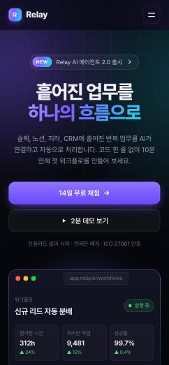 sloplint 5 blocking · | 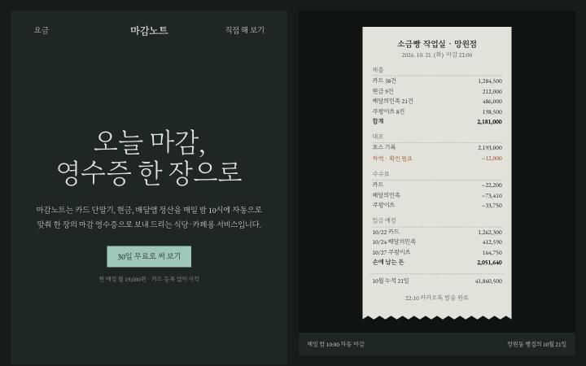 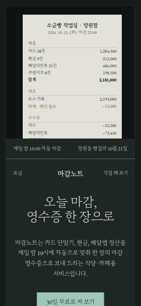 sloplint 0 blocking | 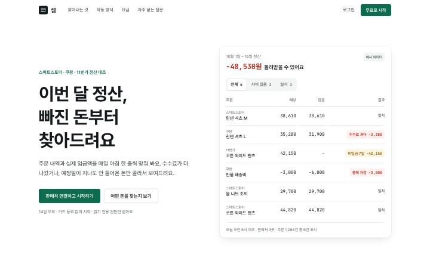 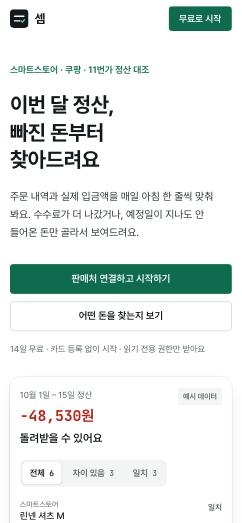 sloplint 0 blocking |
Build a landing page for a Linear-style issue tracker for small engineering teams. | 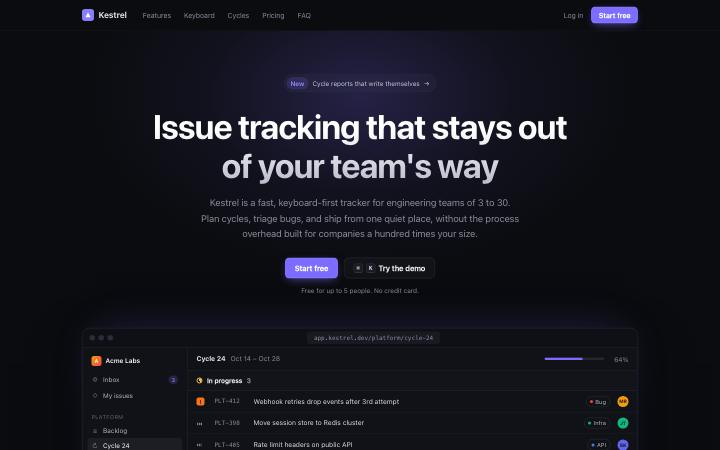 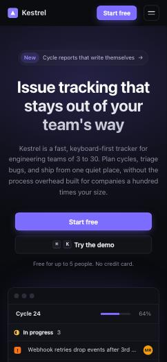 sloplint 1 blocking · | 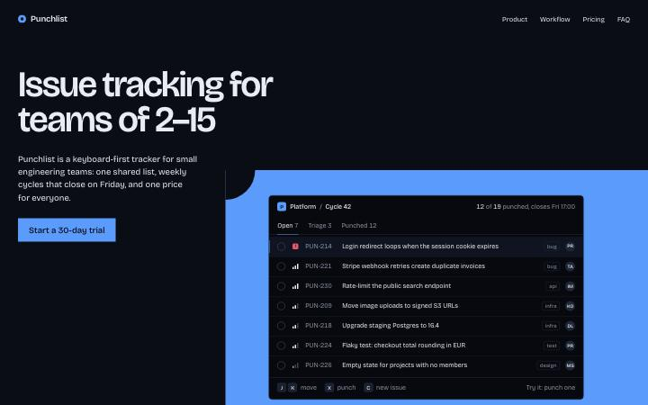 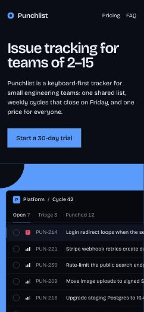 sloplint 0 blocking | 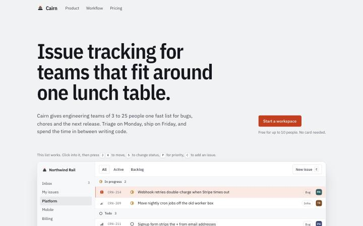 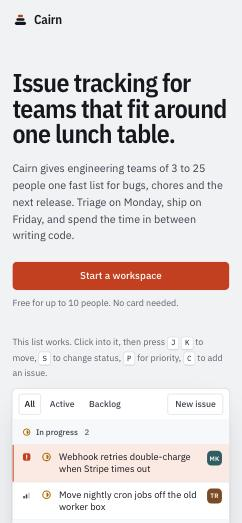 sloplint 0 blocking |
성수동 동네 카페 랜딩페이지 만들어줘. 메뉴, 위치, 영업시간이 있어야 해. | 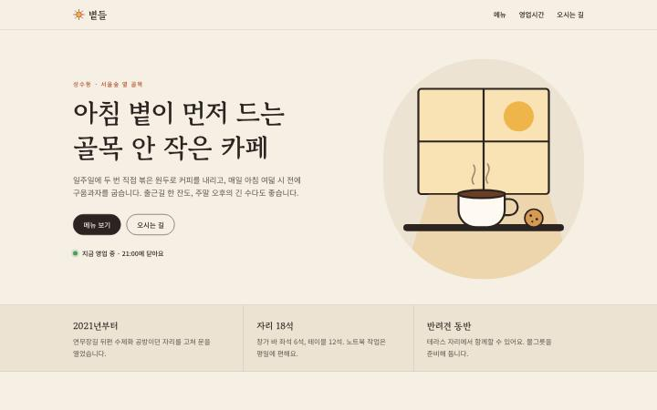 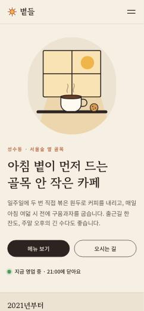 sloplint 0 blocking | 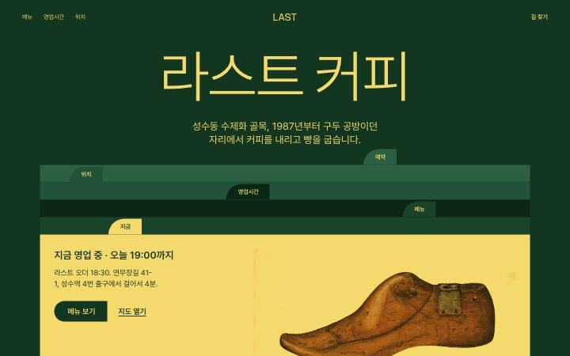 sloplint 0 blocking | 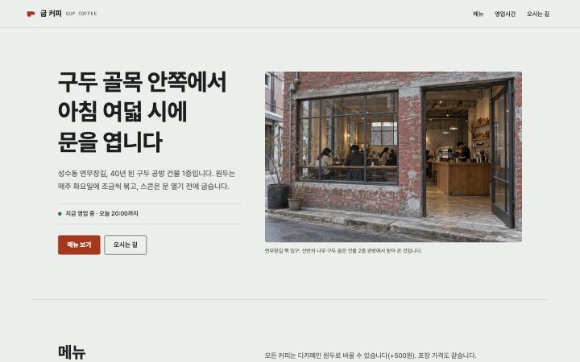 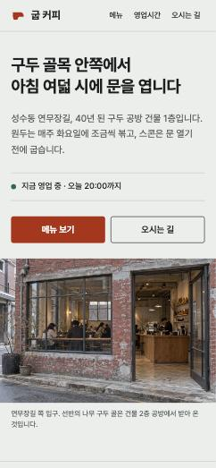 sloplint 0 blocking |
Make a dashboard for a personal finance app: accounts, monthly spending by category, recent transactions. | 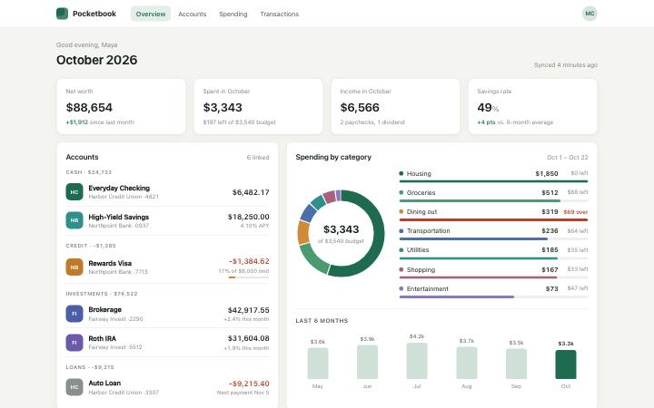 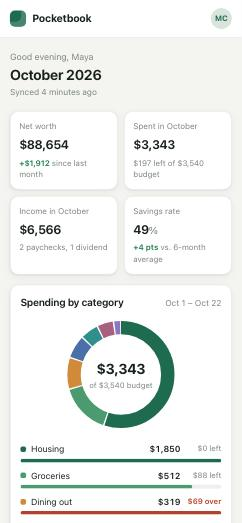 sloplint 0 blocking | 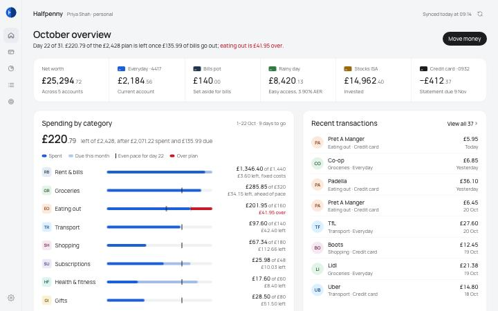 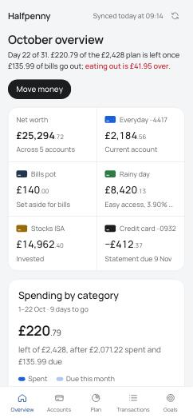 sloplint 0 blocking | 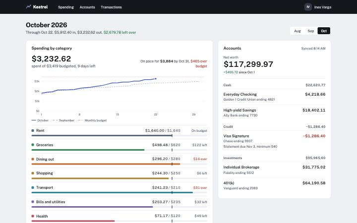 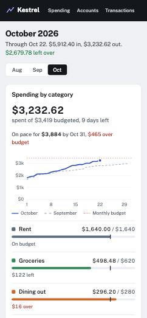 sloplint 0 blocking |